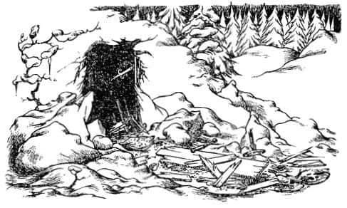
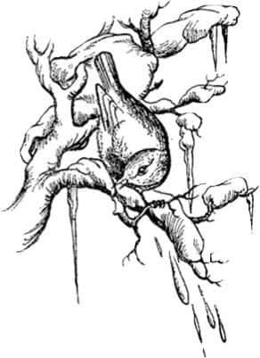

Ormanda
“Keşke Macready acele edip bu insanları buradan uzaklaştırsa” dedi Susan az sonra, “Her yanım korkunç bir şekilde ağrımaya başladı.”
“Ne kadar kötü bu naftalin kokusu!” dedi Edmund.
“Sanırım bu paltoların cepleri naftalinle doludur” dedi Susan, “güvelerden korunmak için.”
“Sırtıma bir şey batıyor” dedi Peter.
“Ve de soğuk değil mi?” dedi Susan.
“Dediğin doğru, hava soğuk” dedi Peter, “üstelik de ıslak. Ne biçim yer burası? Islak bir şeyin üzerinde oturuyorum. Her geçen dakika daha da ıslanıyorum.” Zorlukla ayağa kalktı.
“Haydi çıkalım” dedi Edmund, “gittiler.”
“O-o-oh!” dedi Susan aniden ve herkes ne olduğunu sordu.
“Bir ağacın dibinde oturuyormuşum” dedi Susan, “bakın hava ağarıyor, orada.”
“Haklısın” dedi Peter, “şuraya bakın, şuraya! Her tarafımızda ağaçlar var. Bu ıslak şey de kar. Bunca şeyden sonra Lucy’nin ormanına geldiğimize inanıyorum.”
Artık yanılmadıklarına emindiler. Dördü birden soğuk bir kış gününün günışığında gözlerini kırpıştırarak dikiliyorlardı. Arkalarında askılara asılı paltolar, önlerinde ise karlarla kaplı ağaçlar vardı.
Peter hemen Lucy’ye döndü.
“Sana inanmadığım için özür dilerim” dedi, “Özür dilerim. El sıkışalım mı?”
“Elbette” dedi Lucy ve el sıkıştılar.
“Ve şimdi” dedi Susan, “Şimdi ne yapacağız?”
“Ne mi?” dedi Peter, “elbette gidip ormanı araştıracağız.”
“Öf!” dedi Susan ayağını yere vurarak, “hava çok soğuk. Şu paltoları giysek olmaz mı?”
“Bizim değil ki” dedi Peter kuşkuyla.
“Eminim kimse aldırmaz” dedi Susan, “evden dışarıya çıkarmayacağız ki; dolaptan bile dışarı çıkarmayacağız.”
“Bunu hiç düşünmemiştim Su” dedi Peter. “Senin bu açıklamanla şimdi her şeyi anlıyorum. Dolaptan aldığın yere bıraktığın sürece, kimse senin paltoyu çaldığını söyleyemez. Ve sanırım tüm bu ülke dolabın içinde.”
Susan’ın bu akıllıca planını hemen yürürlüğe koydular. Paltolar onlar için öyle büyüktü ki topuklarına kadar uzanıyordu; paltodan daha çok saray giysileri gibi duruyordu üzerlerinde. Şimdi herkes ısınmıştı ve birbirlerinin yeni giysileri içinde daha iyi göründüğünü ve çevreye de daha fazla uyum sağladığını düşünüyordu.
“Kutup kâşifleri olduğumuzu varsayabiliriz” dedi Lucy.
“Varsaymasak da her şey yeterince ilginç olacak” dedi Peter, önlerinden ormana doğru ilerlerken. Tepelerinde ağır kara bulutlar vardı ve akşam olmadan önce yine kar yağacağa benziyordu.
“Bana göre” diye söze başladı Edmund, “Biraz sola doğru gitmemiz gerekmiyor mu? Yani, eğer lamba direğine varmak istiyorsak.” Bir an için ormana hiç gitmemiş gibi davranması gerektiğini unutmuştu. Ağzından bu sözler çıkar çıkmaz kendini ele verdiğini anladı. Herkes durdu ona baktı. Peter bir ıslık çaldı ve:
“Sen gerçekten buraya gelmişsin” dedi, “Lu seninle burada karşılaştığını söylediği zaman buradaydın – ve sen onun yalancı olduğunu söyledin!”
Ortalıkta ölüm sessizliği vardı. “En zehirli yılanlardan—” dedi Peter, omuzlarını silkti ve daha sonra hiçbir şey söylemedi. Aslında söylenecek çok da bir şey yokmuş gibi görünüyordu. Az sonra yeniden yola çıktılar. Edmund kendi kendine, “Bunu ödeyeceksiniz, sizi kendini beğenmiş, burnu havada ukalalar ordusu!” diye söyleniyordu.
“Nereye gidiyoruz ki?” dedi Susan, konuyu değiştirmek amacıyla.
“Sanırım Lu’nun önderimiz olması gerekir” dedi Peter, “bu onun hakkı. Nereye götüreceksin bizi Lu?”
“Bay Tumnus’u görmeye gidelim mi?” dedi Lucy. “O, size bahsettiğim iyi Faun.”
Kabul ettiler ve aceleyle, ayaklarını yere sağlam basmaya çalışarak yürümeye başladılar. Lucy iyi bir öncü olduğunu gösteriyordu. Önceleri yolu bulup bulamayacağından endişeliydi, ancak biraz sonra o tuhaf ağacı, daha sonra da kesilmiş bir ağacı tanıdı ve onları yolun engebeli hale geldiği küçük bir vadiye ve en sonunda da Bay Tumnus’un mağarasının kapısına getirdi. Fakat orada onları korkunç bir sürpriz bekliyordu.
Kapı, menteşelerinden çıkarılmış ve parçalanmıştı. Mağara karanlık ve soğuktu. İçeride günlerdir yaşanmamış bir yerin kokusu ve nemliliği hissediliyordu. Karlar kapıdan içeriye girmişti ve siyah bir şeyle – ateşten artakalan yanık dallar ve kül olduğu anlaşılan şeylerle – karışıp zemine yığılmıştı. Görülüyordu ki birisi odayı ateşe vermiş, sonra da söndürmüştü. Yer çanak çömlek parçalarıyla doluydu ve Faun’un babasının resmi bıçakla delik deşik edilmişti.

“Bu sadece zaman kaybı” dedi Edmund, “buraya gelmenin pek yararı olmadı.”
“Bu da ne?” dedi Peter, yere eğilerek. Zemine çivilenmiş bir kâğıt parçası fark etmişti.
“Kâğıda bir şeyler yazılmış mı?” diye sordu Susan.
“Sanıyorum ki yazılmış” diye cevapladı Peter, “fakat bu ışıkta okuyamıyorum. Açık havaya çıkalım.”
Hep beraber dışarıya çıktılar ve Peter şu sözleri okurken onun etrafına toplandılar:
Bu mülkün önceki sahibi Faun Tumnus, Narnia Kraliçesi, Cair Paravel Sarayı’nın Efendisi, Yalnız Adalar’ın İmparatoriçesi Soylu Majesteleri Jadis’e ihanetten ve adı geçen Majesteleri’nin düşmanlarına yataklık ve yardım edip İnsanlar’la arkadaşlık etmekten tutuklanmış, yargılanmayı beklemektedir.
imza MAUGRIM, Gizli Polis Şefi,
YAŞASIN KRALİÇE!
Çocuklar birbirlerine baktılar.
“Burayı sevip sevmeyeceğimi bilmiyorum” dedi Susan.
“Bu Kraliçe kim, Lu?” dedi Peter. “Onun hakkında bir şey biliyor musun?”
“Asla gerçek bir kraliçe değil o” diye cevapladı Lucy. “Korkunç bir Cadı o, Beyaz Cadı. Herkes, tüm orman halkı ondan nefret ediyor. Tüm ülkeye öyle bir büyü yapmış ki burada her mevsim kış, ama Noel bayramı hiç gelmiyor.”
“Ben – ben devam etmenin bir anlamı olup olmadığını merak ediyorum” dedi Susan, “Yani demek istiyorum ki burası pek güvenli değil ve sanki hiç de eğlenceli olacak gibi görünmüyor. Hava gittikçe soğuyor ve yiyecek bir şey getirmedik. Eve dönmeye ne dersiniz?”
“Ah, ama bunu yapamayız, yapamayız!” dedi Lucy aniden, “Görmüyor musun? Tüm bu olanlardan sonra eve dönemeyiz. Bütün bunlar benim yüzümden. Zavallı Faun’un başı derde girdi. Beni Cadı’dan sakladı ve geri dönüş yolunu gösterdi. Majesteleri’nin düşmanlarına yataklık ve yardım edip insanlarla arkadaşlık etmekten bu kastediliyor. Onu kurtarmayı denememiz gerek.”
“Yapabileceğimiz sürüyle şey var” dedi Edmund, “yiyebileceğimiz hiçbir şey yokken!”
“Sen kapa çeneni!” dedi Edmund’a hâlâ kızgın olan Peter. “Sen ne düşünüyorsun Susan?”
“Lu’nun haklı olduğuna dair güçlü bir his var içimde” dedi Susan. “Bir adım bile ilerlemek istemiyorum. Keşke hiç gelmeseydik buraya. Fakat, adı her neyse – yani Faun için bir şeyler yapmayı denememiz gerektiğini düşünüyorum.”
“Ben de öyle düşünüyorum” dedi Peter. “Hiç yiyeceğimizin olmaması beni de kaygılandırıyor. Geri dönüp mutfaktan bir şeyler alsak iyi olurdu ancak bir kere terk ettik mi bu ülkeye geri dönebileceğimizin garantisi yokmuş gibi görünüyor. Devam etmemiz gerektiğini düşünüyorum.”
“Ben de” dedi kızların ikisi de.
“Zavallı adamın nerede hapsedildiğini bilseydik keşke” dedi Peter.
Şimdi ne yapacaklarını kara kara düşünürlerken Lucy “Bakın! Kızıl göğüslü bir ardıçkuşu. Burada gördüğüm ilk kuş bu. Evet! – Acaba Narnia’da kuşlar konuşabiliyor mu? Sanki bize bir şey söylemek istiyormuş gibi görünüyor” diye bağırdı. Sonra ardıçkuşuna dönerek “Lütfen Faun Tumnus’un nereye götürüldüğünü bize söyleyebilir misin?” dedi. Bunu söylerken kuşa doğru bir adım yaklaşmıştı. Kuş hemen uçtu, ancak bir sonraki ağaca kondu. Orada tüneyerek sanki söylenenleri anlamış gibi dikkatle onlara baktı. Dört çocuk neredeyse hiç farkına varmadan kuşun bir iki adım yakınına kadar geldiler. Bundan sonra ardıçkuşu yeniden bir sonraki ağaca uçtu ve yine dikkatle onlara baktı (Bundan daha kırmızı göğüslü ve parlak gözlü bir ardıçkuşu bulmanız olanaksızdır).

“Biliyor musunuz” dedi Lucy, “Gerçekten bizim onu izlememizi istediğine inanıyorum.”
“Ben de öyle düşünüyordum” dedi Susan. “Sen ne düşünüyorsun Peter?”
“Denesek iyi olur” diye cevapladı Peter.
Ardıçkuşu sorunu tamamen anlamış gibi görünüyordu. Sürekli onların biraz ilerisinde ağaçtan ağaca uçuyor, fakat hep kolayca takip edebilecekleri yakınlıkta kalıyordu. Bu şekilde onları yavaş yavaş yokuş aşağı yöneltti. Ardıçkuşu konduğu zaman dallardaki karın düşmesine neden oluyordu. Bir süre sonra gökyüzündeki bulutlar aralandı, kış güneşi ortaya çıktı ve etraflarındaki karlar göz kamaştırıcı bir biçimde parlamaya başladı. Kızlar önde, bu şekilde yaklaşık yarım saat kadar gitmişlerdi ki Edmund, Peter’e, “Eğer hâlâ burnun çok yükseklerde değilse, dinlemen gereken bir şey söyleyeceğim sana” dedi.
“Ne diyeceksin?” diye sordu Peter.
“Sus! Sesini yükseltme” dedi Edmund, “kızları korkutmayalım. Şu anda ne yaptığımızın farkında mısın?”
“Ne?” dedi Peter, sesini iyice alçaltıp fısıldayarak.
“Hakkında hiçbir şey bilmediğimiz bir rehberi takip ediyoruz. Bu kuşun kimden yana olduğunu nereden bileceğiz? Neden bizi bir tuzağa sürüklemesin ki?”
“Bu çok kötü bir düşünce. Ama – biliyorsun ki o bir ardıçkuşu. Okuduğum tüm hikâyelerde bunlar iyi kuşlardır. Eminim ki bir ardıçkuşu kötüden yana olmaz.”
“Sorun oysa eğer, hangi taraf haklı ki? Faunların haklı, Kraliçe’nin haksız (evet bize bir cadı olduğunun söylendiğini biliyorum) olduğunu nereden bileceğiz? Gerçekte her ikisi hakkında da bir şey bilmiyoruz.”
“Faun, Lucy’yi kurtardı.”
“Kurtardığını söyledi. Fakat nasıl bilebiliriz ki? Ayrıca başka bir şey daha var: Buradan eve nasıl döneceğimiz hakkında kimsenin en ufak bir fikri var mı?”
“Aman Tanrım!” dedi Peter, “Bunu hiç düşünmemiştim.”
“Ve akşam yemeği yeme şansımız hiç yok” dedi Edmund.